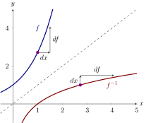

We see the theoretical underpinning of finding the derivative of an inverse function at
a point.
There is one catch to all the explanations given above where we computed derivatives
of inverse functions. To write something like we need to know that the
function has a derivative. All we have shown is that if it has a derivative
then that derivative must be . The Inverse Function Theorem guarantees
this.
Inverse Function Theorem If is a differentiable function that is one-to-one near and ,
then
-
(a)
- is defined for near ,
-
(b)
- is differentiable near ,
-
(c)
- last, but not least:
We will only explain the last result. We know and now we use implicit differentiation (and
the chain rule) to write
Solving for we see This is what we have written above.
It is worth giving one more piece of evidence for the formula above, this
time based on differentials. Consider this plot of a function and its inverse:

Since the inverse of a function is the reflection of the function over the line , we
see that the differentials are “switched” when reflected. Hence we see that
The inverse function theorem gives us a recipe for computing the derivatives of
inverses of functions at points.
Let be a differentiable function that has an inverse. In the table below we give
several values for both and : Compute
From the table above we see that Hence, by
the inverse function theorem
If one example is good, two are better:
Let be a differentiable function that has an inverse. In the table below we give
several values for both and : Compute
Note, From the table above we see that
Hence, by the inverse function theorem
Finally, let’s see an example where the theorem does not apply.
Let be a differentiable function that has an inverse. In the table below we give
several values for both and : Compute
From the table above we see that Ah! But
here, , so we have no guarantee that the inverse exists near the point , but even if it
did the inverse would not be differentiable there.